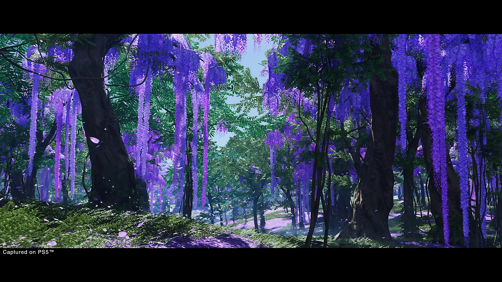
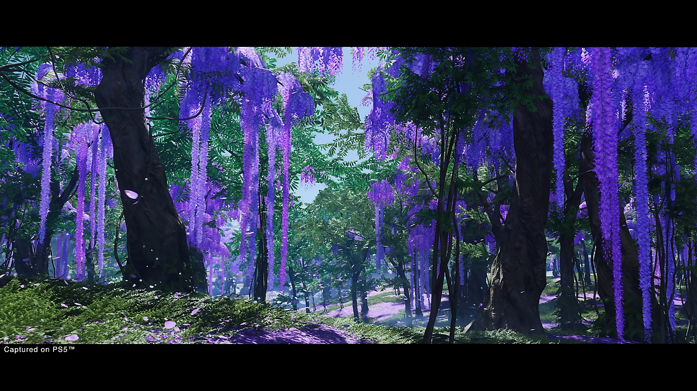

In the late 13th century, the Mongol Empire invades the island of Tsushima. Samurai forces are overwhelmed, villages are destroyed, and the island stands on the brink of collapse.
You are Jin Sakai, one of the last surviving samurai. To protect his homeland and its people, Jin must abandon the rigid of the samurai and forge a new path-the path of the Ghost.
Torn between honor and sacrifice, Jin faces an internal conflict as fierce as the war itself, fighting to save Tsushima at any cost.


 
